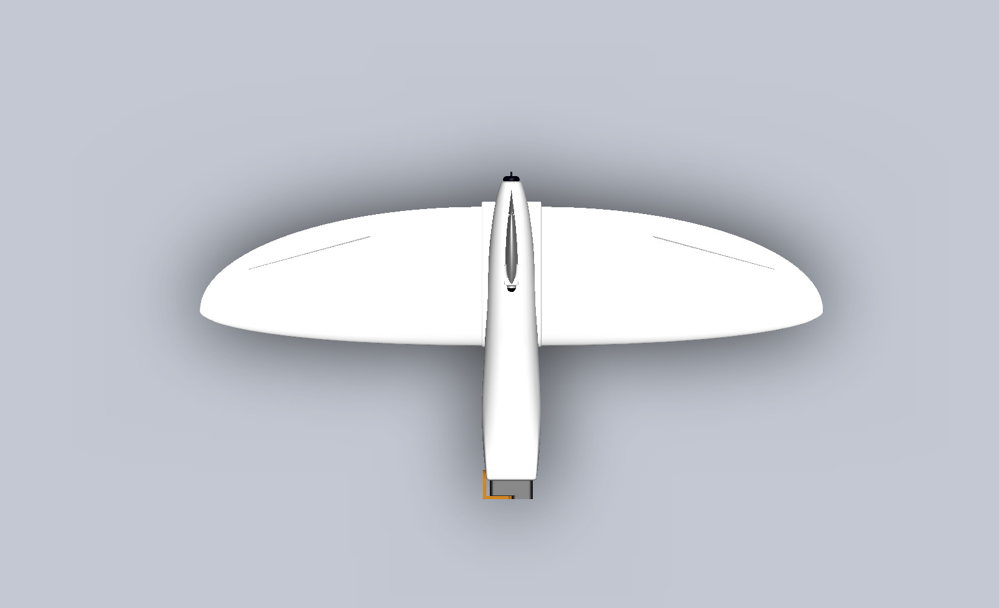
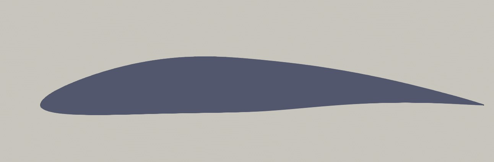
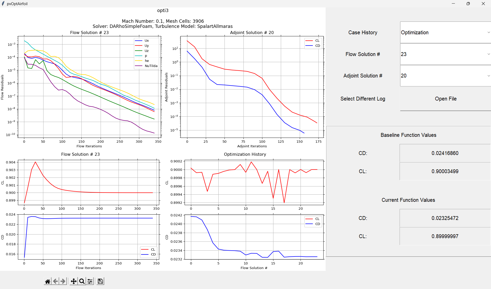
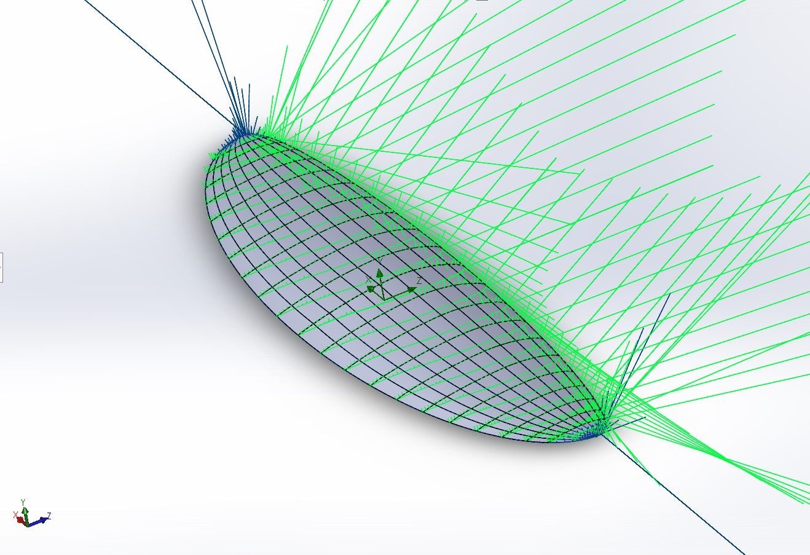
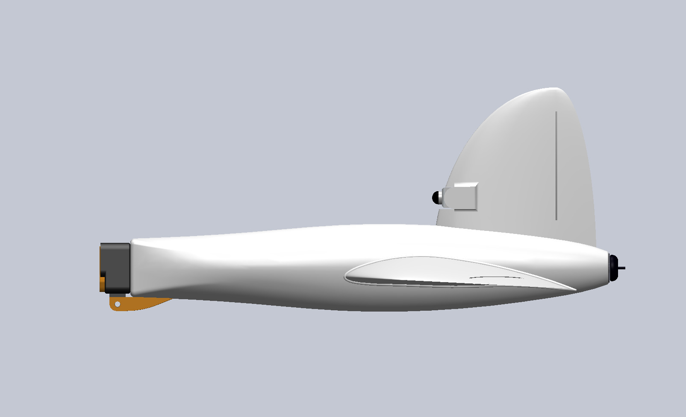
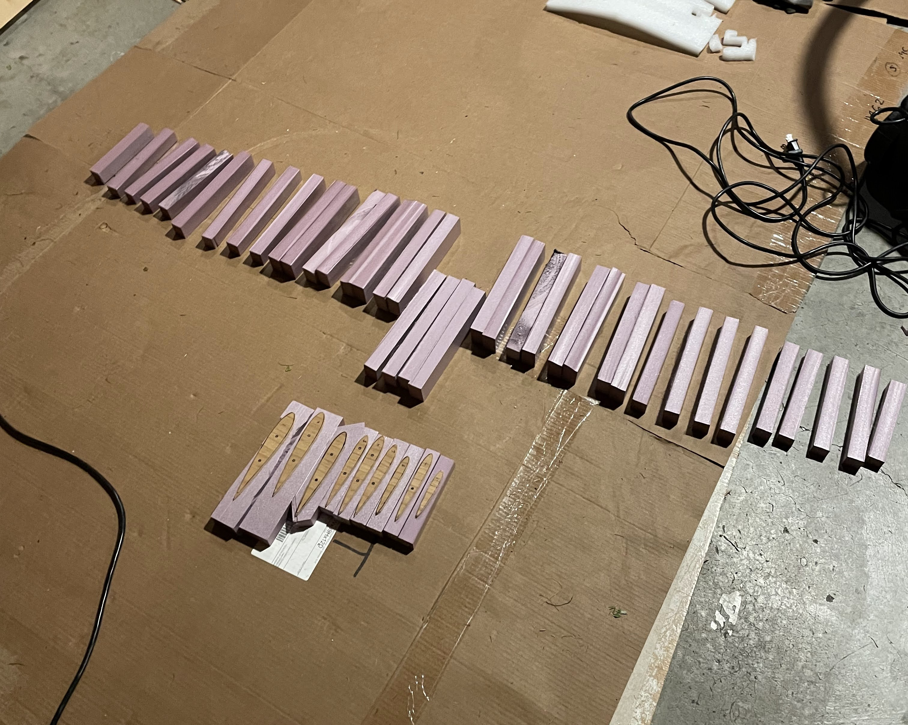
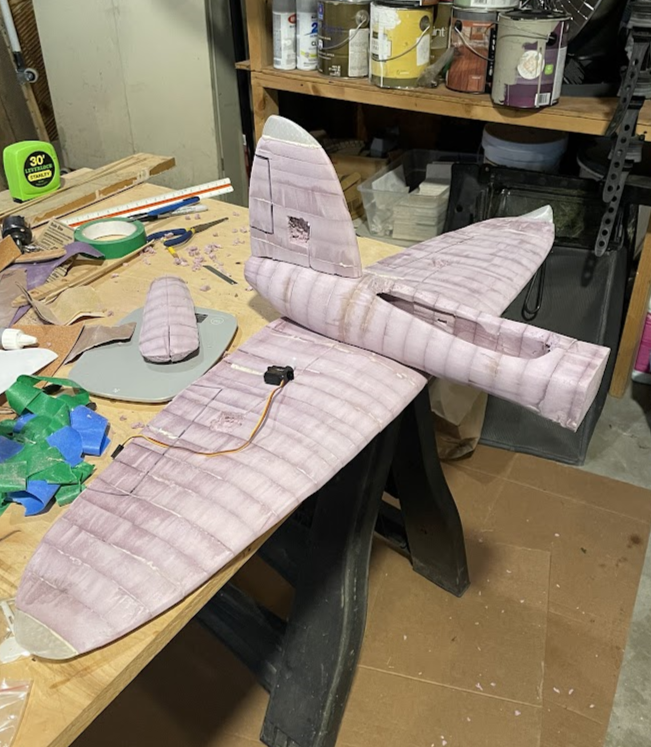
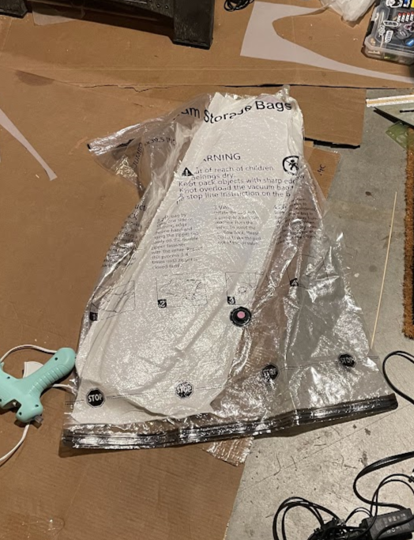
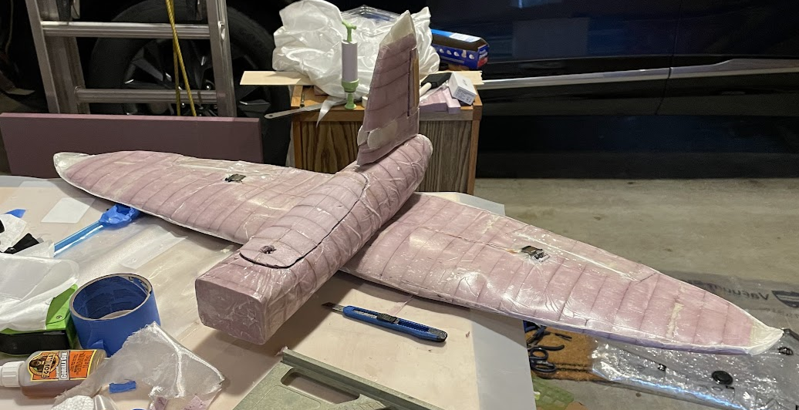
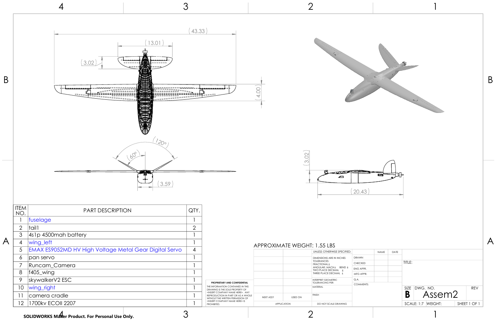

First Person View Long Range Autonomous Eliptical Plank UAV

After building and flying a first person view quadcopter, I became interested in the
applications of FPV systems in a fixed wing aircraft. I also had seen people such as Daniel Riley (rctestflight)
experimenting with ardupilot software to add autonomy to small radio controlled aircraft. I began to explore how
I could use everything that I have learned in university at Iowa State University to build a autonomous fixed
wing system of my own.
I started this project by making a rough sketch of how the aircraft would look. My goal
was to achieve long flight times while also being able to carry a FPV system as well as a GoPro 8. With these
two conditions in mind, I decided to mount the camera up front and opt for a flying wing/flying plank design
with a single main plane and single vertical stabilizer. I began modeling the wing by optimizing a NACA4412
airfoil in Paraview as to minimize drag and optimize the mift coefficient at my desired cruise speed of 75 miles
per hour.


Above is the final airfoil shape as result from the optimization. In the end the airfoil
achieved a lift coefficient of around 0.9 as well as a drag coefficient of around 0.023. Later I realized that
the airfoil had a negative pitching moment however, with my choice to forgo a rear horizontal stabilizer, the
airfoil needed to produce a positive pitch moment to maintain a decent ammount of natural longitudinal
stability. This was corrected during the manufacturing process by inverting the rear 5-10% of the airfoil to
redirect the airflow.

I decided to go for an elliptical wing shape as they produce little induced drag
compared to other wing shapes. I wanted to reduce drag generated by the aircraft wherever I could since there
would be a camera with a flat front on the nose producing a large amount of drag. After modeling the wing I
continued by modeling the fuselage and vertical stabilizer, as well as other small components such as the
control surfaces, servos, camera mounting plates, and more. I then ran some simple solidworks flow simulations
to better unserstand how the airflow would interact with the body and the forces it would create. These results
told me I needed to correct the pitching moment of the aircraft as well as add some vortex generators where the
wing meets the body to prevent some minor flow separation.

After procurment of all electronics and materials, I began to build the structure of the
airplane. I modeled the plane to be built in three sections all hotwire cut foam core fiberglass composites. The
wing was divided into 27 sections all hotwire cut from pink insulation foam and cross section airfoil templates.
The sections were then glued together after inserting the dual carbon fiber spars into the hotwire cut cavities.
The fuselage and tail were both hotwire cut and glued in a similar fashion.


Once all the sections were cut and glued with their respective spars in place, I cut out
cavities for the servos, camera, and wires to run inside the foam cores, as well as attatching the 3d printed
wingtips and camera mounting plates in the vertical stabilizer where the FPV camera was to be mounted. After the
respective components were installed, the model was ready to be covered in fiberglass.

I covered the wing in a single layer of 2 ounce fiberglass with a dual layer near the
trailing edge where the foam core thinned out. The glass was applied with the fibers at a 45 degree angle to
provide strength in both longitudinal and latitudinal directions as well as assist the spars in resisting
torsion in the wing. The vertical stabilizer and fuselage Layup followed a similar procedure with a single layer
of glass. The components were then layed in storage hand pump vaccum bags with mold release covered mylars as
well as paper towels for a breather layer and left 24 hours to cure.

After all sections were allowed to fully cure they were removed and assembled where they
would be sanded and prepped for paint.
This projects initial goal was to create a medium range FPV plane and an oppertunity to
explore new building techniques. After hotwire, glue, sand, and fiberglass, it was clear that the desired
geometry was not achieved within a realistic margin. With the goal of consistant and reliable flight on a
portable footprint, I eventually decided to redesign the airframe to be 3d printed. A rough design was created
and modeled with the goal of minimizing the fuselage size and overall footprint for ease of transport and 3D
printing. The spar system and main wing were designed to maximize stiffmess while minimizing weight.
Disregarding the front spar used for torsional strength and the rear 2mm spars, With 2 4mm x 400mm carbon spars,
the aircraft can survive 3.7 G's with a 2.5 safety factor. The calculated horizontal and vertical tail volume
coefficients were calculated lower than desired> I wanted to aim for the low end of the reccomended values,
however the calculated coefficinets of VH = .3 and VV = .02 were lower than recommended. I decided they were
acceptable as I prefered a smaller tail volume for efficiency and the yaw damper will help with stability. This
will be a good test on what values to aim for and the beauty of a 3d printed airframe is these properties can
always be revised and reprinted after initial flight testing.

Above shows a prototype of the new airframe. High level calculations and estimates in
matlab show a angle of attack of around 1-2 degrees at a cruise speed of 55mph. A required cruise power of 25
watts at cruise. With a 21700 4S battery and assuming a 50% efficiency (low estimate accounting for more complex
real world drag model and power train losses) this gives a flight time of 1.3 hours and a range of 73 miles.
While this may be an overestimate, it exceeds my goal of a 1hr flight time and 50 mile range. I expect real
testing and flights to land closer to the 50 mile and 1hr metrics. Initial 3D prints of the fuselage showed weak
spots due to layering near hatches and attachment points where threaded inserts were added. these were
reinforced in the final model.
clear; clc; close all;
g = 32.174; %gravity
rho = 0.002377; %air density
W = 1.55; %lbs craft mass
b = 40; %wingspan, inches
root_c = 4; %root chord
tip_c = 2.15; %tip chord
sweep = atand((4-2.15)/20); %wing sweep angle
twist_r = 1.81; %twist at the root chord compared to fuselage
twist_t = -2; %twist at tip chord
S = b*(root_c+tip_c)/2; % wing area
ar = b^2/S; %aspect ratio
taper = tip_c/root_c; %wing taper ratio
c_ = (2/3)*root_c*(1+taper+taper^2)/(1+taper); %mean chord
sweep_qc = atand(tand(sweep) - 0.25*(2*(root_c-tip_c)/b)); %sweep angle at the quarter chord
% drag model
CD_0 = 0.035;
e = 0.80;
k_induced = 1/(pi*e*ar);
% flight envelope
S_ft2 = S/144;
cl_max = 1.2;
stall_velocity = sqrt(2*W/(rho*S_ft2*cl_max));
stall_mph = stall_velocity*3600/5280;
% tail sizing
Sh = 14.1395*2 *(50/90);
lh = 7.39;
VH = Sh*lh/(S*c_);
Sv = 14.1395 *2 * (40/90);
lv = 7.39;
VV = Sv*lv/(S*b);
fprintf('horizontal tail volume coefficient: %.1f\n',VH);
fprintf('vertical tail volume coefficient: %.1f\n',VV);
fprintf('\nstall speed: %.0f mph',stall_mph);
% drag and power required
stall_multiples = [1.7, 2.2, 2.8, 3.2];
fprintf('\ncruise conditions at multiples of stall speed\n');
fprintf('ratio Speed CL CD Drag(lbf) Power Req\n');
for i = 1:length(stall_multiples)
V_target = stall_multiples(i)*stall_mph;
V_target_fps = V_target*5280/3600;
q_target = 0.5*rho*V_target_fps^2;
CL_target = W/(q_target*S_ft2);
CD_target = CD_0 + k_induced*CL_target^2;
D_target = q_target*S_ft2*CD_target;
P_aero_target_W = D_target*V_target_fps*1.355817948;
fprintf('%.3f %.3f %.3f %.3f %.3f %.3f\n',stall_multiples(i),V_target,CL_target,CD_target,D_target,P_aero_target_W);
end
S_spar = pi()*.15748^3 / 32;
sigma_ult = 50000; %psi
M_fail = 2* sigma_ult*S_spar; % 2 spars
root_bending_moment = (1.5/2) * 22 / 8; %W*L/8
W_fail = 8 * M_fail / 22;
max_gs = W_fail / 1.5;
safety_factor = 2.5;
max_gs_safe = max_gs / safety_factor
% airfoil: NACA 2409
NACA2409_alpha0 = -2.0; %zero lift aoa
NACA2409_clAlpha = 6.0; %lift coefficient wrt alpha (slope)
% wing flow model
N = 200; %sections
y = linspace(0,b/2,N)'; %divide wing
eta = 2*y/b; %normalized
chord = root_c + (tip_c-root_c).*eta; %chord at each span wise location
twist = twist_r + (twist_t-twist_r).*eta; %twist at each span wise location
alpha_plot = linspace(-5,15,8);
cruise_velocity = 55 * (5280/3600);
figure(01)
hold on;
grid on;
for i = 1:length(alpha_plot)
alpha_section = alpha_plot(i) + twist;
cl_section = NACA2409_clAlpha*deg2rad(alpha_section-NACA2409_alpha0);
lift_distribution = 0.5*rho*cruise_velocity^2.*chord/12.*cl_section;
plot(y, lift_distribution,'DisplayName', sprintf('aoa: %.1f deg',alpha_plot(i)));
end
yline(W/(b/24), 'r-', 'LineWidth', 4,'DisplayName', 'Average lift for weight');
ylabel('lift per span (lbs per foot)')
xlabel('spanwise location (inches)')
title('lift distribution')
legend("show")
hold off